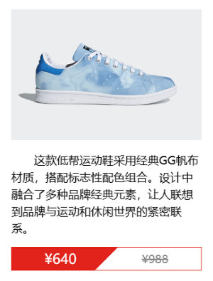

background-image: linear-gradient(direction, color-stop1, color-stop2, ...);
background-image: linear-gradient(#f40, #ff0); background-image: linear-gradient(to bottom, #f40, #ff0);
background-image: linear-gradient(0deg, #f40, #ff0); background-image: linear-gradient(to top, #f40, #ff0);
background-image: linear-gradient(45deg, #f40, #ff0); background-image: linear-gradient(to top right, #f40, #ff0);
background-image: linear-gradient(90deg, #f40 50%, #fff 0);
background-image: linear-gradient(45deg, #f40 95%, #fff 0);
background-image: linear-gradient(135deg, #fff 10%, #f40 0);
background-image: linear-gradient(135deg, #fff 10%, #f40 0) 0 0/50% 100% no-repeat, linear-gradient(45deg, #f40 100%, #fff 0) 100% 0/50% 100% no-repeat;
使用独立属性
相同的属性值可以省略
可读性更好
background-image: linear-gradient(135deg, #fff 10%, var(--color0) 0), linear-gradient(45deg, var(--color0) 90%, #fff 0); background-position: 0 0, 100% 0; background-size: 50% 100%; background-repeat: no-repeat;
background-image: linear-gradient(transparent, #000), url(../imgs/banner.png); background-size: cover;

glplaman.github.io